＜＜戻る
觀相人物評論
［＃地付き］觀相家 石龍子
##近衛文麿公
顏面《がんめん》はモーチーブ・バイタル・テムペラメントと云つて筋骨稜々《きんこつりよう／＼》とした上に脂肉を堅《かた》くつけてゐる、我《わ》が邦《くに》では敦厚《とんこう》にして、修長《しうちよ》と云ふのである。
鼻目《びもく》は清秀《せいしう》、口唇頤部は豐かに滿《み》ちてゐる、こゝに家庭愛、友愛《いうあい》、郷土愛《きやうどあい》、國家愛の旺《さか》んなことが顯著に表彰《へうしやう》されてゐる。
鼻は他の部《ぶ》に比して割合《わりあひ》に小《ちひ》さい、これでは自我《じが》、權利の主張は下手である。責務《せきむ》を深《ふか》く感《かん》じて他を責めるやうなことはしない。
額部《がくぶ》は豐隆廣大であつて深遠にして聰明《そうめい》な分析的智力と測るべからざる經倫《けいりん》を包藏してゐられる。
頭頂《づちやう》に進むに從つて高《たか》い、こゝにモーラル・カレヂ、即ち道徳的精力《だうとくてきせいりよく》の強大と正義性、靈妙性の特種な發達《はつたつ》をもつてゐる。
側頂上部《そくちやうじやうぶ》の警戒性も寔によく發達《はつたつ》してゐられるのを見る。故に公は目前咄嗟《もくぜんとつさ》の事にも、遠大のことに處しても勇敢果決《ゆうかんくわけつ》の行爲は缺けてゐる恐《おそ》れがあるから、勿論快刀亂麻を斷つ手腕《しゆわん》には乏しい。
前額部《ぜんがくぶ》の鑑識性や調和性、仁惠性《じんけいせい》などには目立つ程よく發達《はつたつ》しておられる、こゝらが公の主宰腦力であらう。公《こう》の公《こう》たる所以は悉くこの主宰腦力《しゆさいなうりよく》から流露せられるに相違《さうゐ》はない。
［＃折り返して２字下げ］ 一、思想《しさう》は厚徳、崇高であつて廣大緻密《くわうだいちみつ》
［＃折り返して２字下げ］ 一、心性は寛仁《くわんじん》にして公明正大
［＃折り返して２字下げ］ 一、氣力《きりよく》は耐忍力が強大であつて不撓不屈《ふたうふくつ》
［＃折り返して２字下げ］ 一、視察力は深遠《しんゑん》にして聰明《そうめい》
［＃折り返して２字下げ］ 一、企畫力《きくわくりよく》は高大であつて始終一貫、忠誠《ちうせい》を主持し、時勢を洞察して忠愛《ちうあい》、恭謙、廣く世界を鑑識され、以て國政《こくせい》に從《した》がはれ、昭和の覇業に偉大《ゐだい》 な力を盡され、憂愁の美を收《をさ》めらるゝであらう。
多難他事《たなんたじ》の今日、公は他の好意｜惡意《あくい》を正しく區別されて、國政《こくせい》にあたられることは隨分《ずいぶん》人知れない御困難も多からうと拜察《はいさつ》さるべき表彰も眉宇《びう》の間に見へてゐる。
概《がい》して人《ひと》には三つの力がある。
［＃折り返して２字下げ］ 一、クリーチーヴ（創造力《さうざうりよく》）
［＃折り返して２字下げ］ 一、デストラクチーブ（破壞力《はくわいりよく》）
［＃折り返して２字下げ］ 一、コンサーヴアチーヴ（保守力《ほしゆりよく》）とである。
公《こう》はクリーチーヴ、コンサーヴアチーヴの性格《せいかく》が土臺の方であらうと思ふ。デストラクチーヴの性格が寔《まこと》に薄《うす》い。
公の年齡《ねんれい》がわからないから寔に殘念《ざんねん》であるが、公は三十二｜歳頃《さいごろ》から四十歳の半《なかば》にかけては何事も至極華やかに通《とほ》られる方であつて、五十｜歳代《さいだい》になると、國家社會のことや御家庭｜内輪《うちわ》のことについて多事《たじ》であり、六十歳代にかゝると、愈々《いよ／＼》國家《こくか》の大任を双肩《さうけん》に引き受け、公直無私で行かれることゝならう。
額の紋理《もんり》の模樣、眉毛の形状、大體の面貌《めんばう》はすべて優麗に美化されて、古來偉人の老熟《らうじゆく》された相貌と少しも異《こと》ならない。且つ御健康も極めて順《じゆん》であり一體長壽の方《はう》であるから、國政大事に際《さい》して愈々慶賀をく能はざる次第《しだい》である。
##永野修身大將
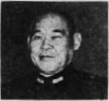
顏《かほ》は敦厚《とんかう》にして修長、殊に二重頤《ふたへあご》で、下顎は極めて豐肉強大《ほうにくきやうだい》である。鼻翼《びよく》より口角に垂《た》れてゐる法令は極めて深《ふか》くして長く且つ明瞭《めいれう》である。心中《しんちう》は竹を割つたやうに確然《かくぜん》として正しい。口角《こうかく》は大きいが堅《かた》く締り、觀骨《くわんこつ》は皮肉の下に堅牢《けんらう》な勢があり、耳は巨大《きよだい》であつてその位置《ゐち》も高く、鼻目は清秀《せいしう》で特に眼神に力《ちから》があり、鼻は他のものに比《くら》べて少《すこ》し小《ちひ》さい。
額《ひたひ》は上下に廣濶で測り知ることの出來《でき》ない智力を包藏し、頭頂部《づちやうぶ》に至るにつれて發達《はつたつ》が著しい、道徳的精力の旺盛《わうせい》なのと高等感情の豐《ゆた》かであることを示してゐる。
額部《がくぶ》の三紋は深くて著しい。正義性《せいぎせい》が特種に發達してゐるのを物語《ものがた》つてゐる。
サテ主眼とする形質《けいしつ》は筋骨營養質であるから、氣宇廣大《きうくわうだい》で迫らず、從容として衆庶《しうしよ》を御し、細事に拘泥《かうでい》せず、殊にあたつて動《どう》ずることなく、巨細の事はよく分析《ぶんせき》し推理し概括し、眼前《がんぜん》の事物の觀察は敏捷《びんせふ》で、事を處理するや、快刀亂麻《くわいたうらんま》を斷つが如く、又常々透徹せる鑑識力《かんしきりよく》を供へられ、意思《いし》も強く、精力も枯渇《こかつ》せず、徳も高く、思想は雄大高遠《ゆうだいかうゑん》にして、深沈《しんちん》たる大略を包藏せられ、事に當るや剛勇《がうゆう》にして正義、公直無私、決《けつ》して我流に傾くことがなく、如何に許多《いくた》の難關《なんくわん》に出會つても、泰然自若として切《き》り拔《ぬ》け、事の仕上げを上手《じやうず》になさるのが、將軍の偉い性格であり、又｜長所《ちやうしよ》であらう。一體頭の上下に長く頂上《ちやうじやう》の高いのは、高等感情の強大《きやうだい》な徴《ちよう》である。額《ひたひ》の上下に廣く豐かなのは、智力《ちりよく》の豐かな徴で、額の紋理《もんり》の深く正しいのは正義性《せいぎせい》の強大である徴《しるし》となる。
將軍《しやうぐん》は眉毛軟麗、眼目清秀、額から顎《あご》まで歪《ゆが》まずに直立して眞直であり、殊に頤《あご》に至つては容易に見る事の出來ない程《ほど》豐滿巨大《ほうまんきよだい》である。こゝに私心なく唯々｜國家《こくか》を思ふ旺盛なる愛情が横溢《わういつ》してゐる。
由來、家庭愛《かていあい》、友愛、郷土愛、國家愛は唯々《ただ／＼》頤《あご》にのみ表彰されるのである。獨逸《ドイツ》のヒツトラーにしても、伊太利のムツソリーニにしても、支那の蒋介石《しやうかいせき》にしても悉く頤が巨大《きよだい》である。將軍の頤《あご》は前三者に比べて決して負けない、寧《むし》ろより以上巨大にして營養力《えいやうりよく》にとんだ頤である。吾人人間を研究する責務《せきむ》をもつてゐるものは、現時｜非常多難《ひじやうたなん》の時に將軍のやうな國家愛《こくかあい》に富まれた頤《あご》を見るにつけても、大に心《こゝろ》を強《つよ》うする所以である。それで幼少《えうせう》の時分から遂に軍人となられたであらう。將軍《しやうぐん》は常に決して破懷的に進む性格《せいかく》の方ではない、防禦的の才幹《さいかん》に非常につよい方である。
然し壯年《さうねん》にあつては若氣の至りで、隨分猛烈急激《ずゐぶんまうれつきうげき》、突飛に無頓着にやられたこともあつたであらうが、追年自から反省《はんせい》されては、常々高上進化の舞臺に修進《しうしん》されてこられたと見へて、今日は形質《けいしつ》も寔《まこと》に平均され、老熟渾成の境に入られた形相《けいさう》である。
特に眼は清秀《せいしう》にして智力と感情が寔《まこと》に工合よく表彰されてゐる。精密な觀察《くわんさつ》や分析にも長ぜられ、遂に透徹した鑑識力《かんしきりよく》で如何なる遠大な事も結果《けつくわ》よく優勝するであらう。これでは門外漢なる世間《せけん》の人とでも至極上手に交《まぢは》つて來てもやりそこねはなく察ろ面白《おもしろ》をかしく賑やかに通られて人の信望《しんばう》も集まる澤である。特筆するに將軍《しやうぐん》のやうな堅牢巨大な顎は寔《まこと》に少ない。顎の小さい人《ひと》に國家愛にとむ人はないと古來｜東洋《とうやう》でも歐米でも言つてゐる。現世でも顎の巨大《きよだい》な人が皆な國の首相《しゆしやう》になつてゐるではないか。將軍《しやうぐん》の顎は國家愛の旺盛な標本《へうほん》である。また意思も強大、目的も遠大、計畫《けいくわく》も廣大《くわうだい》、家庭愛も、郷土愛も友愛《いうあい》も皆大《みなだい》である。
要《えう》するに將軍はこれらの巨大な性格《せいかく》が、特に宏大性（サブリミテー）の作用に支配《しはい》されて老境の仕事《しごと》を仕上《しあ》げるのであるから頼もしいものである。吾人｜觀相學人《くわんさうがくじん》の意を強うする所は將軍の長壽《ちやうじゆ》であること、如何に苦難《くなん》に出會しても、精力の枯渇《こかつ》しないことである。而して益々《ます／＼》顯營《けんえい》の加はるのは將軍《しやうぐん》の六十歳半ばから先きの事《こと》であることが、宿命的にこの巨大《きよだい》な頤に記るされてゐる。
##板垣征四郎中將
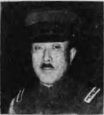
軍帽《ぐんぼう》を深く被られて、肝腎な額、頭部の模樣が充分に研究《けんきう》されないのは、甚だ以て遺憾《ゐかん》であるが、相貌は腦髓《なうずゐ》の發達を表彰する處《ところ》であるから、ツマル所｜同《おな》じ事《こと》になる。
眼下《がんか》から頤にかけて僅かな部位《ぶゐ》に現はれた所から判斷《はんだん》をするのである。
將軍は筋骨稜々《きんこつりよう／＼》とした顏面に脂肉をよく被《かぶ》らせた形質で、これをモーチブ・ヴアイタル・テムペラメント以下説くやうな性格《せいかく》の方である。
顏面《がんめん》の長い所に強大な顴骨《くわんこつ》が前外方に突出してゐるのは、意思《いし》の強いのと、破壞力《はくわいりよく》と抵抗力の強大な表徴《へうちよう》である。
前述せる如く下顎《かがく》の豐滿なのは家庭愛｜友愛《いうあい》、郷土愛、國家愛《こくかあい》の旺んなことになる。由來顎の狹小《けふせう》な人に國家愛に富んだ例《れい》はない。ヒツトラーでも、ムツソリーニでも御覽の通《とほ》りの顎《あご》である。又この顎には持續性《ぢぞくせい》の強大《きやうだい》を表してゐる。
口角の硬く締《しま》つてゐるは、秘密《ひみつ》を洩らさない、然も言行《げんかう》一致實踐躬行である。
鼻唇溝《びしんこう》は口を圍つて深く口角《こうかく》の外に垂れてゐる。廣實にして正義心《せいぎしん》にとむことになる。
右はすべて筋骨質《きんこつしつ》のタイプであるが、その内でも鼻梁《びりよう》の中央が勝れて高いのは、ローマンノーズと云つて、その心性は正義剛直《せいぎごうちよく》、勇猛不退、實宏にして衆庶《しうしよ》を駕御し、自尊性、強硬性《きやうかうせい》にとんで殊に權利《けんり》の主張に剛強である。
ウヱリントン、ナポレオン、シースコツト、ハンニバル、クロムヱルなぞのやうな世界《せかい》に喧傳された名將軍《めいしやうぐいん》、首領は皆この鼻型を具《そな》へられた人たちである。
板垣將軍《いたがきしやうぐん》も果してこの流亞の人である。嘗《か》つてナポレオンはその相貌《さうばう》に於て大鼻、殊にローマ鼻を有するものを撰んで大將《たいしやう》としたことは有名な實事《じじつ》である。
故に板垣將軍《いたがきしやうぐん》のことに當るや堅牢不拔、如何《いか》なる場合でも泰然自若として邁進《まいしん》され、一時に即刻に前後左右をも顧みず進撃突進《しんげきとつしん》するよりも、防禦で勝利《しようり》を制し得る流亞に屬してゐる。
それ等は皆この顴骨《くわんこつ》に表彩されてゐる。
次で特筆《とくひつ》すべき性格はこの豐かな顎《あご》である。前述した通りすべての愛情《あいじやう》に豐かな事である。殊に國家愛《こくかあい》に豐かなことである。將軍《しやうぐん》が國家を思ふ時、如何なる困難缺乏《こんなんけつばふ》にも、精力氣力を枯渇せず、深沈《しんちん》にして大略、實厚衆を容れ、從容《しようよう》として不迫《せまらず》、士氣愈々剛勇で猛進《まうしん》せらるゝであらう。
眼は清秀《せいしう》にして慈愛に厚く、觀察《くわんさつ》に長じ、事物を綜合し時機を看破《かんぱ》し、時宣に適處《てきしよ》するの才幹に長じてゐる。
古來《こらい》東洋《とうやう》では王字面と云つて、師傳の任《にん》に當ると大いに發達《はつたつ》すると云つてゐる。
歐米《おうべい》ではかやうな相貌を消極的《せうきよくてき》で積極質であるといつている。即ち奇策《きさく》を行ひ、處實自在に使ひ分ける軍の參謀《さんぼう》として國政《こくせい》を上手に仕上げて行く才幹《さいかん》にも富まれてゐる。何れにしても時分の所信《しよしん》、自分のの任務を履行することは臆面《おくめん》もなく斷行される性格《せいかく》である。
將軍《しやうぐん》の五十歳かれ六十歳にかけては、多事多忙《たじたばう》であらう。その非常なる多難な時を呑氣《のんき》に引き受けて、寧ろ自然の使命《しめい》であるとして益々獅子奮進の勇を振《ふる》ふであらう。温厚《をんかう》にして柔和な相貌の奧底《おくそこ》には剛勇不退な決心が横溢《おういつ》してゐる。
古來世に王佐の將軍《しやうぐん》として偉人の名を得てゐる人は大體《だいたい》に於て、この種のタイプをもつてゐる。
##鈴木喜三郎氏
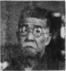
一黨の消長盛衰《せうちやうせいすゐ》はその主長者である處の總裁の相貌が遺憾なく表示《へうじ》するものである。由來一方に偏した形質《テムペラメント》では物の首領にはなれない。必らずや三形質（筋骨《モーチープ》、心性《メンタル》、營養《ヴアイタル》）が平均した形格《けいかく》でなければならない。これは世界《せかい》到《いた》る處同じことである。總裁は寔に平均した形格《けいかく》で整備した相貌《さうばう》の方である。面上に駄肉《だにく》がなく揃つて締つてゐるのが即ち平衡《へいかう》を得たことになり、又腦の心性機關が偏僻不等《へんへきふとう》のない發達をもつてゐることになる。
顏《かほ》の上、中、下部が均衡を以て出來《でき》て、又顏の道具《だうぐ》が悉く巨大である。巨大《きよだい》なのは思想の巨大目的の巨大、實行力《じつかうりよく》の巨大な表徴である。
殊に顏面《がんめん》の骨格が至る處に、目立《めだ》つて上部に見へるのは筋骨質《きんこつしつ》の特徴《とくちよう》で、コレハ自尊性《セルフエステイム》の外彰になる。
頭腦中《づなうちう》に於ては自尊性の部位は顱頂部《ろちやうぶ》で、前に強硬性《きやうかうせい》、後に持續性、その左右に名譽性《めいよせい》が坐してゐる。その作用《さよう》は自立自身、決して他に依頼《いらい》することがなく、如何《いか》なる事に出會つても、必《かな》らずその所信を決行《けつかう》しなければ止まない事になる。要《えう》するに總裁《そうさい》んほ主宰腦力はこの邊《あた》りであらう。
顱頂結節部の警戒性《けいかいせい》は少し不發達を見せてゐるが、前額部《ぜんがくぶ》の智力は極めて豐《ゆた》かで、然かも思慮分別に綿密《めんみつ》で、分析的の才幹に富むから、警戒性《けいかいせい》の不足を補つて案外失策なく成功《せいかう》するのみならず、この缺點が總裁《そうさい》にとつては、かへつて成功の原因《げんいん》をなすことになるであらう。何となれば警戒性《けいかいせい》が過大な時は、臆病に傾いて他人の顏色《かほいろ》を見てその所信を枉《ま》げると云ふ事になつてしまふ。
［＃折り返して２字下げ］ 一、眉間《びかん》より耳孔に至る處を一見すれば、隨分《ずゐぶん》その距離は遠い、コレハ精力、氣力《きりよく》が富豐な徴になる。この距離《きより》の狹《せま》いものは事に當つて忽ち疾勞《ひらう》するが、ここの廣いものは連日奮鬪《れんじつふんとう》しても疲勞《ひらう》しないことになる。又｜總裁《そうさい》がこの精力に加へて堅固な頤頬（強大《きやうだい》な意思、辛棒力）と豐廣な額部の智力の發達《はつたつ》をもつてゐるから、如何なる盤根錯節《ばんこんさくせつ》に逢つてもドシ／＼切り拔けて通る所以《ゆえん》である。
［＃折り返して２字下げ］ 一、髮際《はえぎは》から頭の上部の高いのは、道徳的精力《モラルカレヂ》の強大な徴。
［＃折り返して２字下げ］ 一、額部の三紋が正しく揃《そろ》つたのは、正義尊崇、仁惠性《じんけいせい》の旺んな徴。
［＃折り返して２字下げ］ 一、眉間の廣濶《くわうくわつ》なのは廣量、大度の徴。
［＃折り返して２字下げ］ 一、眼《め》は慈愛《じあい》、人和の性に強く、人を觀るの明《めい》に富み、咄嗟《とつさ》の觀察も、永遠の鑑識《かんしき》も誤らない。
［＃折り返して２字下げ］ 一、鼻は準頭《あたま》に到つて豐大である。之れは理財性《アクイシチーブネス》が強大である徴であるて、鼻梁《びりよう》の高くないのは物事｜自己主義《じこしゆぎ》を用ひない。寧ろ調和《てうわ》、仁惠を好み何事をもみな背負《せお》ひ込んで、常に椽の下の力持《ちからもち》をして何事によらず人の世話《せわ》をすることになる。
［＃折り返して２字下げ］ 一、兩顴骨が廣《ひろ》く且《か》つ力《ちから》のあるのは抵抗力、破壞力が強大《きやうだい》であつて、何事を爲《な》すに當《あた》つても綿密《めんみつ》な防禦と頑強不屈な破壞力《はくわいりよく》をもつてゐることになる。
［＃折り返して２字下げ］ 一、口唇が締《しま》つて、法令が開けて深く口を圍繞《ゐげう》して垂《た》れてゐるのは、正義、強硬《きやうかう》、秩序性が強いのを表《あら》はしてゐる。依つて號令は嚴明《げんめい》、秩序は整然、寛仁《くわんじん》にして大度、清濁併呑する雅量《がりやう》があるのである。
［＃折り返して２字下げ］ 一、頤の強大《きやうだい》なのは郷土愛、國家愛に強よく、且つ意志、持續力《ぢぞくりよく》が大であることと、晩年《ばんねん》の幸運《かううん》である徴候である。
これを要するに、總裁《そうさい》の相貌は大山鳴動するも、泰然自若《たいぜんじじやく》として沈着、既に五十にして四十九歳の非《ひ》を知《し》られ、六十にして六十化された深智《しんち》、高徳、偉大な人格と不可測の大經倫《だいけいりん》を包藏せられてゐるを見るのである。非常時《ひじやうじ》にして而も複雜極まる現代《げんだい》に處し、衆庶を駕御することを得る大人格《だいじんかく》、大偉人、大經倫家《だいけいりんか》である。
##松岡洋右氏
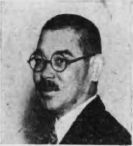
列國碁布《れつこくごふ》し、衡を爭つて複離極まる世界非常時《せかいひじやうじ》の外交の局に當り、能く折衝御侮し樽俎《そんそ》の間に國策を經倫し、國家《こくか》を百年の安きに置いた者は、性相學上《せいそうがくじやう》抑《そもそ》も如何なる形質の人に屬するであらうか。
形質《けいしつ》が若し一方に偏して積極《せききよく》ならば、意力も抵抗力《ていかうりよく》も破壞力も共に極度に強硬《きやうかう》に傾き、しかも堅忍不撓《けんにんふたう》の力が旺盛であるから、夷燃《ゐぜん》として必らずその主張を貫徹し得るが、形質《けいしつ》が若し消極ならば一にも服從二にも屈伏《くつぷく》して何事にも敵手《てきしゆ》の意志に從はねばならない憫れな境遇《きやうぐう》に陷るであらう。
書く云へば、外交《ぐわいかう》の局に當る者は積極的形質《せききよくてきけいしつ》の人であることを要するは勿論《もちろん》であるが、然し積極も餘りに過大《くわだい》に陷入れば、その爲す所自我傲慢に流れて、反《かへ》つて損《そん》を招くことになる。何《なん》となれば他の長短是非に注意《ちうい》して、清濁併呑する調和的平和《てうわてきへいわ》な雅量を缺くおそれがあるからである。眞に外交官の個性《こせい》に適してゐる者を撰《えら》ぶには、
兩質共に發達して剛柔相和《がうじうあひわ》した形質の人でなければならない。
先きに聯盟《れんめい》に向つた松岡洋右氏は果して非常時《ひじやうじ》の大使として理想に合つた人《ひと》であらうか、どうか。氏の額《ひたひ》は豐大《ほうだい》で能く顏面の中部下部と相應《あひおう》じてゐる。顏容は敦厚で修長《しうちやう》、これを筋骨營養質のタイプと云つて事《こと》の仕上《しあ》げに長ずる才幹《さいかん》にとんでゐる。
氏の心性機關中《しんせいきくわんちう》尤も強く發達してゐるのは、自尊性、強硬性《きやうかうせい》、正義性、尊崇性、仁惠性《じんけいせい》がこれに次ぐ。此れらの心性が凡有《あらゆ》る他の諸心性を統宰《とうさい》して活動する點から考察《かうさつ》すれば、氏は慥かに積極的心性力《せきくよくてきしんせいりよく》の人である。
氏は亦大なる推因力と鑑識力《かんしきりよく》と抵抗力と破壞力とをもつてゐるから、大事變《だいじへん》に遭遇しても、能く智慮分別《ちりよふんべつ》を盡くして鑑識的に活斷を下す事には長ずる所《ところ》であると同時に、觀察力にも秀でてゐるから咄嗟《とつさ》の間に處して快刀亂麻を斷つ敏腕《びんんわん》がある。如何なる事件が眼前に錯綜《さくそう》して來ても從容《しようよう》として推量に容れ、或いは抵抗《ていかう》し、或は破壞して切廻《きりまは》してゆく。
又氏の髮際《はえぎは》が能く揃つて下顎が豐かなのは、調和性《てうわせい》と博愛同情心と持續力が旺盛《わうせい》な徴であるから、各種の國人と調和握手《てうわあくしゆ》して圓轉滑脱する交際場裡の人として最《もつと》も適《てき》してゐる。見よ豐廣なる額《ひたひ》には大なる智力の包藏を表はし、強大な顴骨《くわんこつ》には意力と抵抗力と破壞力の強《つよ》きを表はし、下顎が大であるのは愛情《あいじやう》の強いのを表はし、鼻が豐高なのは權利《けんり》の主張と義務を尊重する性格《せいかく》の強《つよ》きを表はし、兩眼を半開してゐるのは秘密力《ひみつりよく》の旺盛なるを表はし、眉骨が中央部《ちうおうぶ》に於て隆々として高いのは、言語力《げんごりよく》の天才を表はし、兩眉の間の廣いのは氣宇の廣大なのを表はし鼻唇溝の正《たゞ》しいのは法令が嚴格なのを表《あら》はし、耳《みゝ》が高《たか》く付いてゐるのは理想の高遠《かうゑん》なのを證するのである。
要《えう》するに氏は外交官として、如上の見識《けしき》と經綸と手腕とが牢乎《ろうこ》として奪ふべからざると、他の企反を許さぬ大膽《だいたん》いして豪腹なる天賦の言語力《げんごりよく》をもつてゐる。
吾々《われ／＼》九千萬の同胞も、歴々《れき／＼》たる外交官を有する政府も悉く皆なこの手腕《しゆわん》と拔擢《ばつてき》して、邦家の興亡をこの双肩《そうけん》に負はしめて、大使の首席《しゆせき》として世界有事の外交舞臺《ぐわいかうぶたい》に上らしめた。吾々はその人選《じんせん》を誤らなければ結果必勝すべきは自然《しぜん》の理である。昭和十二年の大々非常時《だい／＼ひじやうじ》に際し、吾々は自覺の信念《しんねん》を明らかにし、國内《こくない》の同樣をさけ、國力一致に努《つと》め、内外相呼應して殉忠報國《じんちうはうこく》の擧に盡《つ》くすべきである。
##野間清治氏
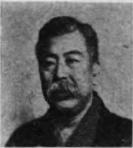
古より絶大《ぜつだい》の事に功を立てんと企《くはだ》てる人は必らず筋骨質に心性質の二｜形質《けいしつ》が榮養質に勝つて發達《はつたつ》し、大業の局を終へて、國家《こくか》百｜年《ねん》の基を開くとか、範を後世《こうせい》に垂れるとかいふ人は、必らずや心性、榮養《えいやう》の二形質が過大に發達《はつたつ》してゐるものである。創業、守成の二者を圓滿《ゑんまん》に成就し名を天下《てんか》に得る人は、三｜形質《けいしつ》が平均を得て毫も過不及《くわふきふ》なく、加ふるに悉く充分《じうぶん》な發達をなしてゐる。氏は此の三｜形質《けいしつ》が能く揃つた人で精力《せいりよく》は偉大、意思《いし》は強固で狹い一家や一國の爲《た》めに計《はか》るを屑としない、大《おほ》いに世界人類の爲めに計畫《けいくわく》するから、その頭腦は顏面《がんめん》と共に、國風《こくふう》、土臭を脱出して、國の東西を問はず、世界《せかい》到《いた》る處の人に混融｜親和《しんわ》して主義計畫を遂行せんとするのが即《すなは》ち氏である。
額《ひたひ》は廣濶で中部が豐《ゆたか》に發達してゐるのは觀察《くわんさつ》に、推理に、記彰力は鑑識力《かんしきりよく》と共に發達し、美麗性《びれいせい》、模擬性、宏大性《くわんだいせい》、警戒性、諧謔性なぞの各種《かくしゆ》の心性力がよく發達してゐるのである。かやうに前頭部《ぜんとうぶ》と顱頂部が均衡《きんかう》を得て發達《はつたつ》してゐるから、人間的の大望《たいばう》を抱いても、至大な道徳力《だうとくりよく》の下に活動して且つ遺算なくその企畫した目的《もくてき》をば實行し寛輝し得る所以《ゆえん》である。
顴骨《くわんこつ》の巨大なのは、如何《いか》なる危難をも、大敵をも、攝伏《せつぷく》して進み得る處の抵抗性、破壞性《はくわいせい》が發達《はつたつ》してゐる表彰である。又｜顏面《がんめん》到《いた》る處の骨骼も太く、逞しく脂肉《しにく》がこれに應じて豐かなのは、後頭部の生命性《せいめいせい》と飮食性の強大なる發達《はつたつ》を示したもので、殊に下顎の強大頬肉《きやうだいほふにく》の豐かなのがそれである。氏は壯年の時代《じだい》より多少の飢渇に遭遇《さうぐう》するとも毫も疲憊する事がなく、意思力《いしりよく》を鼓舞、活動《くわつどう》させて、能く萬難を排《はい》して來た。而して雄大《ゆうだい》にして綿密なその思慮分別《しりよふんべつ》は必らずや實事となつて顯現《けんげん》したであらう。創業に守成《しゆせい》に行く所として可ならざるなきは氏のやうなタイプを有《いう》する人にして初めて可能《かのう》となるのである。
氏の仁惠性は常に高等《かうとう》なる智力、感情と調和し、強硬《きやうかう》に意地強く活動すると同時《どうじ》に、智力は主觀《しゆくわん》たると客觀たるの別なく、邁遍なく能く發達《はつたつ》してゐる。
氏が政治界《せいぢかい》に入らず、經濟界に入らず、目前《もくぜん》の野心的競爭場裡に馳搜《ちさう》することを避けて國家社會の爲め、又は後世《こうせい》の爲めに謀《はか》つて、目前の利害の爲めに心《こゝろ》を奪はれなかつたのは、顏《かほ》の中線が大に發達《はつたつ》をしてゐるに依るのである。
##矢野恒太氏
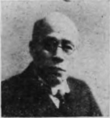
此の形格《けいかく》は自身と自衛力が強大である。古《いにしへ》の所謂戰鬪に生長して大平に老ゆるの流亞《りうあ》である。如何なる難事《なんじ》に出會しても平然自若たる顏貌《がんばう》 であり、又姿勢である。それは頭頂部《づりやうぶ》の自尊性と強硬性《きやうかうせい》と又腦部殊に耳の周圍《しうゐ》の格機關の大なる發達の表示《へうじ》である。ソレデ理財性、秘密性破壞性、抵抗性などは腦隋中《なうずゐちう》の主宰力となつて此の四肢全體を活動《くわつどう》させてゐる。
額《ひたひ》の中央にある事實性を横斷して一の横線《わうせん》を引いてその線の上下を視よ、線の上部《じやうぶ》の腦量も線の下部に當る。殊に耳孔《みゝあな》に至る部分の腦量も又實に著しい發達《はつたつ》を見せてゐる。
又｜頭部《とうぶ》は何となく高隆膨大せるを認《みと》められるのである。此が生存競爭に勇猛心《ゆうまうしん》を起して今日をなした所以《ゆえん》である。而して又上額｜髮際《はえぎは》から前頂は如何にもムツクリとして豐《ゆたか》である。故に智徳強大なる上に高尚優美《かうしやういうび》で博愛同情一視｜同人的《どうじんてき》な天眞の愛が十分に認《みと》められてゐる。ソレデ當代《たうだい》に於ける實業的、理財的｜大人格《だいじんかく》の人と申して差支のない方《かた》である。
形質《けいしつ》から云つても筋骨營養質である。壯年《さうねん》の時分から獅子奮進の勢で仕事《しごと》をしたその創業にも長じ、殊に仕事《しごと》の仕上げに至《いたつ》ては人の追從を許さぬ。手腕《しゆわん》も力量もあり、猶その上に衆庶《しうしよ》を統御《とうぎよ》して來た實廣な雅量《がりやう》なぞは到底他の人に見《み》ることの出來ない天賦の才能《さいのう》である。また頤は堅牢で二重に肥大《ひだい》してゐる。東洋では、古來之を燕領《えんりよ》と言つて萬里侯の將だと申して衆人《しうじん》を御する人になる。西洋では理財的才幹《りざいてきさいかん》の表彰だと申して居る。普通《ふつう》としてはこれを晩年の福分に取つてゐる。眉毛《まゆげ》は少しく粗であるて荒い。從つて壯年《さうねん》は隨分勝手、氣儘に計略的に破壞的《はくわいてき》にやられて、樣々《さま／゛＼》の難儀にも出會したのであらうが、中年よりは意地と精力《せいりよく》と計略を以て漸次社會の表面に立つことになつた。晩年《ばんねん》は前頭頂部にある豐かな智徳《ちとく》の精力、殊《こと》にヴエネボレンスの力が働《はたら》いて博愛、同情《どうじやう》の念は唯に實業界に限《かぎ》られず廣く四海兄弟に注ぐと云ふ主義《しゆぎ》に傾いてゐる事であらう。
氏は晩年《ばんねん》抱負《はうふ》も十分に發揮され實現《じつげん》されてて、現下の社會では益々《ます／＼》老熟《らうじゆく》された手腕を羽振りよく切り廻はされ時世《じせい》に迎合《げいがふ》されるであらう。意地の強いセルフエステイムな鼻、秘密《ひみつ》を洩らさぬ締つた口唇《こうしん》、デストラクチブの強い顴骨《くわんこつ》之れらは悉く皆意思を斷行《だんかう》して結果を收める性格になる。
氏が榮達顯榮《えいたつけんえい》の美花《びくわ》を收むるは又これから晩年《ばんねん》の事である。何と申しても稀世《きせい》の人物であり現代の偉人であると申してよい性格《せいかく》と相貌《さうばう》を具へてゐる。
##島田俊雄氏
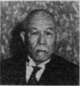
顏面《がんめん》も、頭腦も、よく比衡《ひかう》を得《え》てゐる。額の廣く高く、顏面《がんめん》の諸器官も不均衡《ふきんかう》のないのは、常識の優れて發達《はつたつ》した偉人の儕輩に屬すべきもので、特種の技能專門《ぎのうせんもん》の智識は、到底この頭腦《づなう》この顏面に求《もと》め難《がた》きにかゝわらず、只今《たゞいま》の榮地を占めて、能く各方面《かくはうめん》の人格、後進を統御《とうぎよ》し、攝に權衡を支持して行くのはこれが爲《た》めである。
かやうな人は、改革者《かいかくしや》としては熱烈の鋭氣《えいき》に乏しいが、現状を維持《ゐぢ》して徐ろに進む人である。警戒性《けいかいせい》が大なると共に、自尊性《じそんせい》も尊崇性も大である。
額の廣いのに應《おう》じて深くない、だから分析的《ぶんせきてき》ではないが、廣い智識がある、世間《せけん》を廣く渡つて、者に凝滯《ぎようたい》せず、巧みに事物を受込んで警戒注意《けいかいちうい》を加へつゝ進んで行くから、目覺《めざま》しい大偉業は覺束《おぼつか》ないけれども、大なる失策《しつさく》もなく又大なる缺點も暴露《ばくろ》する事なく、よく世を推し移《うつ》つて案外敵が少ない。平和《へいわ》の世には得難い人《ひと》であらう。
頭腦《づなう》の横に廣いのは、顳顴葉の張《は》つてゐるので、理財性、秘密性、破壞性《はくわいせい》、抵抗性が充分に發達《はつたつ》してゐるしるしであり、その表彰としては顏面《がんめん》の中部、下部にある、即ち顴骨《くわんこつ》の強大、顎の豐厚、鼻翼の豐肉《ほうにく》である。理財計畫乃至は政略について巧《うま》く切《き》り廻《まは》すのがその長所である。
顏《かほ》の諸道具の中で鼻の鼻翼が豐肉《ほうにく》で且つ大きい。これは何事にも積極的に猛烈《まうれつ》に、ドシ／＼決行して行くことになるから、事に當つては何事《なにごと》も逡巡躊躇せず、強硬《きやうかう》にその所信を行り通す元氣、氣力《きりよく》が強くことになる。ソコデ巧《うま》く計略を以て切廻す大丈夫の所爲は、充分《じうぶん》な勇氣をもつて猛進斷行《まうしんだんかう》しても、他の障礙《しやうがい》を受けることは割合に少ない。何《なん》となれば、この廣濶な額には常識圓滿何れの事件《じけん》も受込んで消化し去り、何らの葛藤《かつとう》も起さずに、又さゝいな事は水《みづ》に流《んが》すやうな雅量《がりやう》をもつた性格である。
心性《しんせい》の各機關は能く揃つて、その働《はたら》きは強大である。隨分意思も強い。強硬《きやうかう》な所もある。我儘も強ければ人情《にんじやう》も強い。徳性も強ければ、尊崇性《そんすうせい》も強《つよ》い。又仁惠性も強い。爲めに自己《じこ》を忘れ博愛同情《はくあいどうじやう》、一視同仁、四海兄弟で、國家《こくか》の爲めに充分盡すであらう。併し平和《へいわ》な世界ではこの筆法で行つて貰《もら》ひ度い。が、世界活劇の烈しくなつてきた時分《じぶん》には帷幕人となつて、宰相を助《たす》けて行くがよい。膽力もあり、遠大《ゑんだい》の識見《しきけん》もあり、經綸もあつて縣引も隨分上手《ずゐぶんじやうず》で政略も深く偉大《ゐだい》な椽下の力持になる人であらう。
##有賀長文氏
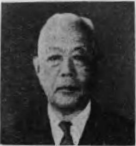
若し氏に親炙《しんしや》した者は何人も言ふであらう。『有賀氏は有徳《いうとく》な人《ひと》である』と、然り、其の通りである。氏に於《おい》ては形格が示すが如くに、裝飾《そうしよく》もなければ、表裏《へうり》もなく、眞粹を主として、他に顧慮なく智力《ちりよく》の認める處、道徳の賛する所《ところ》、信じて斷行《だんかう》するのが氏の個性《こせい》である。
以下《いか》形格《けいかく》の要概に入つて觀察を下せば、心性《しんせい》と形態は一致してその通《とほ》りである。第一に額部と頭蓋《づがい》の頂部とを一見すれば、額《ひたひ》は殊に目立つて廣く、高く而《しか》も上に昇るに準じて出張つてゐる。これは智力、殊に、理性《りせい》と鑑識力が豐富に發達《はつたつ》してゐる徴である。
頭と頂部《ちやうぶ》がかやうに高く發達《はつたつ》してゐるのは、道徳、宗教《しうけう》、殊に正義仁惠と希望、尊崇性《そんすうせい》の旺盛な徴候である。氏の形格《けいかく》の心性的筋骨質たる所以は全く此に存《そん》するのである。故に心性質の司る意想《いさう》と筋骨質の司る勤勞とは寔に不足《ふそく》でないから、上乘の形格《けいかく》と申すべきであろう。
下顎が兄弟で堅牢の姿を呈してゐるのは、本來《ほんらい》顱頂葉の強い發達をなしてゐるのである。一體下顎がかやうに顏の上中部に釣合《つりあ》つて、丈夫に組成《そせい》されてゐる者は辛棒力が強い、意思《いし》の力も強い、又分別《またふんべつ》にも富むことに古來から西洋《せいやう》の相學では定められてゐる。これ等は至極尤《しごくもつと》もなことで、下顎は動物には唯《たゞ》その僅かばかり痕跡があるだけで、人間《にんげん》のやうな下顎は人間特有のものである。人間《にんげん》でも顏の上部中部に比較《ひかく》して下顎の發達《はつたつ》が劣つて小さいものは、小膽又は白癡《はくち》或は天瘍者、無分別者であるから、結局《けつきよく》下顎は人間性の優劣と比例《ひれい》し、また人智の發達と比例《ひれい》してゐるのである。故《ゆゑ》に氏のやうな下顎は面部相應《めんぶさうおう》より以上に揃つて發達して、如何《いか》にも堅牢であるから、この人間性の充分《じうぶん》に發達をもつてゐる徴であつて、智力《ちりよく》もあり、分別もあり、如何なる風雨《ふうう》に遭遇しても神色自若《しんしよくじじやく》として、更に神《かみ》の守《まも》りをば失はないことになる。
その上又｜法令《はふれい》（鼻唇溝）が判然《はんぜん》として口唇を圍ぐつて深く下方に垂れてゐるものは、正義性《せいぎせい》に富んでゐる徴であつて、鼻頭《びとう》が稜々として高く、鼻梁《びりよう》が一般に骨張《ほねば》つてゐるのは、自尊性、名譽性の過大《くわだい》である表彰であるから隨分權利《ずゐぶんけんり》の主張も強いことになる。然して兩耳《りやうみゝ》の周圍に著しい發達《はつたつ》をみせてゐる。これはアツクイシチーブネスで理財《りざい》の才幹《さいかん》が強大な發達を示してゐるのである。眉尾《まゆじり》の垂れた所なども又著明に發達《はつたつ》してゐる、これはカルキレーションで儲《まう》けた金を殖す才能工夫の源泉《げんせん》である。これ等主宰腦力を大なる智力《ちりよく》によつて程能く監督《かんとく》するのである。これ氏が常《つね》に謹嚴にして事を苟且に付《ふ》せず、術數や計略に走《はし》らないで、人間たるの資格《しかく》を盡せば我が能事畢れりとなす處《ところ》で、蓋しこの點が氏の理想《りさう》に相違ないであらう。
下顎の強大《きやうだい》に加へて、顴骨も又勢があつて筋骨稜々《きんこつりよう／＼》としてゐる。顏面は修長《しうちやう》で鼻も又顴骨の間に勢ひよく坐を占《し》めてゐる。高《たか》い人間性《にんげんせい》を嚴守して處榮に走るの時代式《じだいしき》を逐はない徴で、此れが氏の性格《せいかく》の高尚な所以である。眉弓が眼から高く離《はな》れてゐるのは尊崇性の發達《はつたつ》を現はして敬神敬老の事に厚く、又｜功名心《こうみやうしん》などに捉はれない事になつて、社會《しやくわい》に處するにも、態度が傲慢《がうまん》でなく、卑俗《ひぞく》でなく、その中庸を卓然《たくぜん》として通るのが、蓋し氏の理想《りさう》であらう。
要《えう》するに現代に於ける氏の仕事《しごと》は前岸に渡る爲めの舟筏《ふないかだ》であつて、氏の目ざす處《ところ》は餘り目前の事ではなかろう。併《しか》し氏の目ざす最終の目的《もくてき》は如何と云ふに、氏は慥《たし》かにクリエーチブ（創造）とデストラクチブ（破壞《はくわい》）とコンサーヴアチブ（保守《ほしゆ》）である。現時年齡は何歳《なんさい》であるかは明《わか》らぬが、寔《まこと》に長壽にして晩年顯榮をなす相貌《さうばう》である。是れから老ひて益々《ます／＼》盛んなりで、晩年の仕上《しあ》げを上手にしたいものである。
##小倉正恒氏
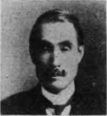
吾人《ごじん》はその如何なる性行《せいかう》の方であるかは知らないが、一｜見《けん》して凡常《ぼんじやう》を脱し得た形格《けいかく》を具へた非凡の一｜人物《じんぶつ》であるに相違ないことは確《たし》かである。
第一吾人の眼に、最《もつと》も強く映ずる所は心性質が著大で、それに筋骨質《きんこつしつ》、營養質と順に發達してゐる。何人《なんびと》でもこのやうな配合を得た時は意力《いりよく》と自信力、調和力、實行力などは大なる智力《ちりよく》、徳性の支配監督下に心性力《しんせいりよく》が働くので、成功は自から期《き》せずして來《く》るのである。
ソコデ人《ひと》の運命は性格が作爲する事《こと》になるのである。從つて又吾人はこの人《ひと》を以て當代に於ける一の成功者と斷ずるのを憚《はゞか》らないのである。
第二は耳《みゝ》の根から顴骨を通じて鼻に至る處《ところ》を一見すれば、腦の基礎部が大いに發達《はつたつ》してゐるのを察知することが出來る。即《すなは》ち理財的精力の絶綸な徴《ちよう》となるのであり、夫れに又前額が頂部と共《とも》に著しく目立つのは、智力《ちりよく》の富豐、觀察力の廣大、道徳性《だうとくせい》の豐となるから、この人の手腕と才幹と主義と目的《もくてき》とは俗世界に處するに該博《がいはく》なる智識を以て、高尚なる目安《めやす》を定め、之を實行するに不撓《ふたう》の精力を持ってするに相違《さうゐ》はない。
概して志を當世《たうせい》んみ得るの士は、割合に此の形格《けいかく》が多いのである。物故された後藤新平氏《ごとうしんぺいし》の如き人《ひと》も、著しい警戒性に缺乏した頭形《づけい》をもつてゐたが、然し賢明《けんめい》なり智力の發達を勇してゐた爲めに、御存じの通りの偉大《ゐだい》なる人であつた。警戒性《けいかいせい》不足と智力の不完全と結合《けつがふ》する場合には成功《せいかう》は決して成し得ないのである。
鼻梁に名譽性を著明《ちよめい》に表徴し、小鼻の形状《けいじやう》は羅馬鼻と猶太鼻との混成物《こんせいぶつ》である。故に氣力あり、自信《じしん》あり、自負力あると同時に、財産性《ざいさねし》の發達も慥かに豐かである。權利《けんり》を主張する力は弱くて責任義務を深《ふか》く感《かん》ずる性格も著しく現はれてゐる。
下顎は顏《かほ》の上部、中部に比較して一｜番《ばん》負《ま》けてゐる故に、家族の難事、親族《しんぞく》の煩勞は一章免ぬかるゝ事は出來ない。又この煩勞《はんらう》にはホト／＼閉口するであらう。口唇の形状などは優美《いうび》であり、又｜人和《じんわ》で天眞の愛があらわれてゐる爲めに、家族親族《かぞくしんぞく》の煩勞に同情し過ぎる事《こと》にもなる。
眉毛は眼から離れて毛並《けなみ》は軟麗《なんれい》である。これはその性格が優美高尚《いうびかうしやう》であつて、特に尊崇性に富んでゐるから宗教心《しうけうしん》にも富む。眼は清秀で、慈悲の厚い性格である。又比較、推因《すゐさつ》、觀察の著明な發達《はつたつ》をも表はしてゐる。この間殊に卑俗《ひぞく》なる處、粗雜なる處《ところ》がなく、人間性は亦道徳性智性の監督を受けて修養《しうやう》怠りなく、最終の美果《びくわ》を結ぶであらう。氏に對して終りに願《ねが》ふことは健康《けんかう》について生れつき消化器、殊《こと》に腸胃の弱い點であるが、これは日常《にちじやう》の食物に依つてテムペラメント（形質）の改造《かいざう》をなして長壽《ちやうじゆ》を計ることである。
##伊澤多喜男氏
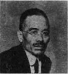
氏は筋骨質《きんこつしつ》と心性質を併有せる人で、營養質《えいやうしつ》の加味は甚だ乏しい。
額《ひたひ》の出張つて廣いのは心性質《しんせいしつ》で、主觀的にも、客觀的にも共《とも》に發達《はつたつ》して、測り難い深遠な智力を包藏《はうざう》してゐる。
鼻が高くて顴骨《くわんこつ》が張り出でた所から云へば、筋骨質《きんこつしつ》で自尊性、強硬性《きやうかうせい》に伴なつて抵抗性、破壞性《はくわいせい》が又著大に發達してゐる。
頤部頬部《いぶけふぶ》は又著しく負けてゐる。これは飮食性《いんしよくせい》、男女性が充分でない徴である。腸胃《ちやうゐ》は壯年の時《とき》から常《つね》に弱い。又家庭に於ても世間《せけん》に出ても面白く賑やかに笑つて世の中を如才《じよさい》なく通り自他の別なく渾和融合《こんわゆうがふ》することは上手でないにきまつてゐるが、然し諧謔性《かいぎやくせい》には富んでゐるから、偶々《たま／＼》隨分滑稽頓智をやつて、矛盾、撞着《どうちやく》、妙不可思議な話など演《えん》ずる事もあらう。然し本來の眞面目の境遇をば脱出《だつしゆつ》しない人である。顏の中部《ちうぶ》が殊に勝れてゐるから、氏は正義性《せいぎせい》、仁惠性に最《もつと》も富んだ人であるが、又この同情《どうじやう》の念を蹂躙して自尊性、強硬性《きやうかうせい》、破壞性、抵抗性を腹焚かせて我を張《は》らうとする事が時々《とき／゛＼》あらう。これで壯年の時《とき》から隨分猛烈に果敢に活動《くわつどう》したに相違《さうゐ》ないが、如何にも放縱を規整する處の智力が發達《はつたつ》してゐるので、克制の功《こう》は次第に智化し靈化し、老境《らうきやう》には目前の名利を爭ふやうな所裡《しより》とは、自然に遠ざかる事《こと》となるであらう。
かやうな形相の人は實地《じつち》の活動よりも、學問上の人、表面《へうめん》に働くよりは裏面の策士《さくし》に適し、教育家《けういくか》若しくは宗教家が個性に近い事《こと》となる。依つて氏は或は一章の徑路《けいろ》を誤つたものかも知れない。
##前田米藏氏
［＃折り返して２字下げ］ 一、額《ひたひ》の目立つほど豐かで廣いのは、測《はか》り知《し》ることの出來ない位に包藏《はうざう》した智力の表はれで心性質《しんせいしつ》の豐かな徴であり筋が現はれて骨張《ほねば》つて而も下顎が大きく、少し張《は》り出《で》てゐるのは筋骨質である。その間亦｜脂肪《しばう》の豐かであるのは營養質《えいやうしつ》である。サスレバ氏は三形質が割合《わりあひ》に揃つた形格《けいかく》の人と申すべきであろう。けれどもその三形質の裡で孰《いづ》れかが主宰力であるかを觀れば、無論筋骨質であるが、またその中《なか》に心性質に屬する智識《ちしき》も豐かである。その智識たるや分析的《ぶんせきてき》ではなくして、概括的《がいくわつてき》であり、考究的ではなくして觀察的《くわんさつてき》である。額の上部の發達《はつたつ》も著明であるがかへつて中部より下半部即ち眉隆起《まゆりうき》の一帶が著明に發達《はつたつ》してゐる。
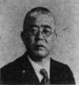
［＃２字下げ］ 又｜頤部《あごぶ》の強よく張り出《で》てゐるのは後頭下部が發達《はつたつ》してゐる表彰であるから、家庭男女《かていだんぢよ》の愛情は殊に旺盛《わうせい》である。ソレに次で顱頂部《ろちやうぶ》にある自信力、自我力、大望《たいまう》、野心、覇氣の發達してゐることは非常《ひじやう》なものである。
［＃２字下げ］ 亦顱頂部の自尊性、強硬性《きやうかうせい》、名譽性の諸機關の發達《はつたつ》が一番著しい豐隆を極《きは》めてゐる、その表彰はこの鼻《はな》の形で鼻はセルフ・エステーム即《すなは》ち自尊性が著大である徴《ちよう》である。ソコデ頭部に於ては顱頂々部が主宰力《しゆさいりよく》を占め、それに強大な顳顴葉の活動《くわつどう》を以てするから、額部その他の部分は殆《ほと》んど之れに盲從して働くことになる。故《ゆゑ》にこの頭腦の發達から見れば、氏は自信大望《じしんたいまう》の人自我の人で智力《ちりよく》にも富み、勇氣も旺《さか》んで、活氣にみちた人《ひと》である。それに警戒性《けいかいせい》も大いに發達してゐれば、大膽小心で積極的《せききよくてき》にことを諸するが、又細心｜綿密《めんみつ》で消極的にも處理して仕事《しごと》に一種の風味《ふうみ》を添へ、性質上にも時々｜變化《へんくわ》を來すことは免れないであらう。
［＃折り返して２字下げ］ 一、それに又氏は正義《せいぎ》の人、仁惠の人で、これに自尊性《じそんせい》、強硬性、名譽性を伍して相互《さうご》に發達してゐるか、ら四海兄弟、一｜視同仁《しどうじん》、博愛同情主義で、實に社會國家《しやくわいこくか》にとつては、大なる啓導者たる人《ひと》であることも推想《すゐさう》されるのである。
［＃折り返して２字下げ］ 一、又耳の周圍《しうゐ》即ち破壞性、秘密性、抵抗性《ていかうせい》なぞも目立つて發達してゐる。即《すなは》ち氏が一書生の時から頭角《とうかく》を表はし、多年奮鬪｜努力《どりよく》して遂に今日の地位に登り得た所以《ゆえん》で即ち大なる智識大なる破壞性、秘密性、抵抗性《ていかうせい》とそれにかてゝ警戒性の配合《はいがふ》の宜しきを得てゐたためにこれらの性格《せいかく》が精妙な働きをして、鋒芒大露で、劍《つるぎ》で云《い》へば村正式で時に或はきれすぎて人好《ひとず》きがしないこともあつたであろう。
［＃折り返して２字下げ］ 一、氏の上額髮際《じやうがくはえぎは》より頭髮に入らんとする處の目立《めだ》つてゐるのは、仁惠性の發達《はつたつ》、その上に豐かなの道徳的精力が大《だい》である所以《ゆえん》、眉間の廣いのは氣宇廣大《きうくわうだい》、法令が深く垂れてゐるのは正義性《せいぎせい》の人、頭を少し横に向けてゐて仰向《あをむ》きになつてゐる姿勢は名譽性《めいよせい》の大なるる表彰であるから、氏は義務を重《おも》んじ、名譽を大切《たいせつ》にするので、何事も苟もせず權利《けんり》の主張も強いが、又それよりも義務責任《ぎむせきにん》を深く感ずることにもなる。此の種の表彰《へうしやう》をもつてゐる人は野心勃々《やしんぼつ／＼》の裡に破壞性《はくわいせい》、秘密性と不可測の智識《ちしき》とに任せて終始一｜貫《くわん》して、その膽力、その智謀《ちばう》、その伎倆は優に他を統御するの器《うつは》であつて、それに近來《きんらい》は大なる徳望を有するから、志望、才幹《さいかん》だけの結果は容易《ようゐ》に收めらるゝことを得《う》る。しかし、晩年《ばんねん》はなほ自己反省の力《ちから》を強めて注意に注意を拂はれ、國家につくす爲《た》めの長短過不及をば容易に認めて修養《しうやう》に努め、晩運を全《まつた》ふすることにされたいものである。
如何に豪傑《がうけつ》でも缺點のあるのは常《つね》である。氏も又此の例に漏《も》れない所もあるが、何にせよ一書生より崛起して獨力《どくりよく》今日《こんにち》の地位を占められるだけの人物《じんぶつ》だけあつて、間殊に凡を拔き衆《しう》に秀でた好相貌《かうさうばう》をもつてゐる。而して氏が名利《みやうり》共《とも》に得て、自ら顯榮をなすのは六十二｜歳《さい》から先きのことであろう。
##小林一三氏
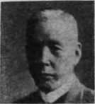
吾人《ごじん》はその如何なる性行の人物《じんぶつ》であるかを聞かないが、一見｜凡常《ぼんじやう》を拔いてゐる形格の人で、實業家としても慥《たし》かに非凡の一偉人には相違《さうゐ》ないが、否な性格上の個性《こせい》から言へば、經濟學者として特殊《とくしゆ》の才幹をもつた人である。
吾人の眼に顯著《けんちよ》に映ずる所は、謹嚴端正《きんげんたんせい》な顏に一寸の隙もなく、筋骨稜々《きんこつりよう／＼》とした骨格に脂肉を豐《ゆた》かにつけて、重苦《おもくる》しい程豐かに飛び出した額《ひたひ》（額はインテレクトの表彰《へうしやう》）と、耳の付け根の上部《じやうぶ》が目立つて發達してゐる。
額《ひたひ》には敏捷と言ふよりは寧《むし》ろ聰明な推理分析的な智力《ちりよく》を豐かに包藏《はうざう》してゐる。
特に耳の上部の目立つた發達《はつたつ》は、アツクイシチーブ、即ち理財《りざい》の才幹《さいかん》であつて、氏の主宰腦力である。
凡そ人を觀相《くわんさう》するには、第一にその人の形質《けいしつ》の關鍵を把るが大切《たいせつ》である。
額の上下が廣くて上部《じやうぶ》に行くに從つて隆々と發達《はつたつ》してゐる所に、凡有るものを分析推理《ぶんせきすゐり》して行く緻密《ちみつ》な智力があり、額部の中央《ちうおう》に事物の事實を認識する智力の深《ふか》い事を表してゐる。
兩眉隆起の發達は萬事《ばんじ》の鑑察に鋭敏であつて、その奧底《おくそこ》までを洞察する事に長《ちやう》じてゐる。
耳《みゝ》の孔《あな》から前額までに至る經線《けいせん》が寔に長いのは、如何に智力《ちりよく》を勞しても容易に枯渇《こかつ》しない心性力の旺盛なのを表《あら》はしてゐる。
額の兩側《りやうがは》の角がよく發達してゐるのは、創業《そうげふ》、組織、計畫する才幹が甚だ豐《ゆた》かである。
眼は慈愛性をタツプリ含み且つ深沈《しんちん》たる大略をも藏してゐる。
兩顴骨は抵抗性《ていかうせい》、破壞性の強大を表《あらは》してゐるから、これでは人から破壞《はくわい》もされない、寧ろ自己の目的方針《もくてきはうしん》を障害するものがあれば、破壞抵抗《はくわいていかう》しても所志の目的を貫徹《くわんてつ》することになる。
鼻は隨分稜々として高い、遺憾《ゐかん》なく人間性を表して、權利《けんり》の主張もつよいが、自尊性《じそんせい》、強硬性もつよい。
鼻唇口《びしんこう》（法令）は深く口角を廻つて廣く下方《かはう》に垂れてゐる。
また人中（鼻下の溝）も正型《せいけい》であつて深く上口唇に眞直《ますぐ》である。兩ながら正義性《せいぎせい》の表彰になり殊に命令《めいれい》の嚴格な事になる。
口唇は硬く締つて口角《こうかく》は少し下方に垂れてゐる。秘密《ひみつ》を嚴守し、言行一致を表はし、多辨《たべん》なるも、言行《げんかう》は親切であつて、虚言《きよげん》がない。
頤《あご》は至極豐かで、家庭愛《かていあい》、友愛、郷土愛、國家愛、社會愛《しやくわいあい》の強よい性格を表はしており、且つまた持續性《ぢぞくせい》に富んでゐる。
心性、筋骨、營養と言ふ順《じゆん》にテムペラメントが割合《わりあひ》によくバランスした人と申《まう》してよろしい。
かやうな人の性格《せいかく》は下記の通りである。
思想《しさう》は優美高尚で、道徳的精力も旺《さか》んでベネボレンス即ち仁惠的な同情心《どうじやうしん》に厚く、目的希望も遠大で、時世《じせい》を見ることは寔に短見でない。言語《げんご》に文章に聰明で然も敏捷《びんせふ》な力があらう。
何事《なにごと》でも初めから仕事の結果を洞察《どうさつ》して、その奧底に達《たつ》した鑑察力で創業するから、何時《いつ》も目的方針《もくてきはうしん》にあやまりがない。（心性質の働き）
大勢の人を駕御し、萬事《ばんじ》にウマク鋒芒を收めて、能く世と握手《あくしゆ》し調和し如才なく仕事の仕上げを上手《じやうず》にして、最後の希望を持つの性格《せいかく》は（營養質の働き）である。
志氣は勇躍、剛強《がうきやう》で不退、如何なる難事でも泰然自若《たいぜんじじやく》として猛進奮鬪し、如何なる野心《やしん》大望でも徹底《てつてい》せざれば止まない旺盛力《わうせいりょく》は（筋骨質の働き）である。
觀相學上から氏の個性《こせい》を言へば、理財學者として學界《がくかい》に貢献した方が、國家社會《こくかしやくわい》の爲めであつた。
然し今日《こんにち》となつては、進まれてきた道にも圓熟渾成《ゑんじゆくこんせい》されて、經驗の上からもまた大《おほ》いなる知識を得《え》られ、その知識からまた自由《じいう》の力を供給されたであらう。
その學識《がくしき》、その自由の力を自家の好尚《かうしやう》に併せられて、老來益々｜永遠《えいゑん》に殘すべき廣大な目的方針に深き熟慮《じゆくりよ》と、強き信念《しんねん》とい、旺盛な勢力とを打ち込んで奮鬪努力《ふんとうどりよく》され使命を透徹されたい。
かやうにして老年《らうねん》の果實を結ぶは、恰《あたか》もよし氏の六十歳代の時である。斯業《しげふ》の成功は唯々氏｜一人《ひとり》の爲めではない。自然と國《くに》に報ずる御奉公である。また氏でなければ斯界の改革《かいかく》創業は出來ない。
##津田信吾氏
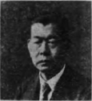
氏《し》について一番目立つて見へるのはこの巨大《きよだい》な耳である。仔細に吟味《ぎんみ》すれば、内外の耳輪は上部《じやうぶ》、中部及び耳垂と共に比例《ひれい》よく揃つて組成《そしき》せられてゐるが下部の耳垂が稍や負けた形《かたち》をなしてゐる。又耳葉の附根《つけね》が少し下つて、而《しか》もそのついた形は、耳根が露はれ耳葉《じえふ》が浮き出てゐる傾向《けいかう》がある。
耳はそもそも如何《いか》なる事を意味し表彰するかと云へば兩親《りやうしん》の遺傳を表《へう》するもので、西洋に於てはその健康《けんかう》及び生命を主宰することになる。故に耳形が比例《ひれい》よく組織せられた人は兩親《りやうしん》より受けた遺傳が善良と云《い》ふことになつて、從つて他の形體《けいたい》も必らずよく揃つて發達《はつたつ》し、腦隋の心性機關も又よく健全《けんぜん》にして均濟統一せる結果《けつくわ》、長壽と斷じて宜しい。それに反した場合には父母の心身《しんしん》も粗末であり、從つて遺傳《ゐでん》も粗末となるから、心性《しんせい》も形體も不揃《ふぞろひ》となつて長壽《ちやうじゆ》は六ケ敷しいことになる。
氏の如く揃《そろ》つて巨大な耳葉、即ち遺傳《ゐでん》が善良であつて、身體は健康《けんかう》、心性力は統合《とうがふ》し、天與の長壽《ちやうじゆ》と云ふことは禀賦と斷《だん》じて差支はない。且つまた耳《みゝ》の巨大と丈夫とは、心性力が偉大《ゐだい》で思想と感情の凡庸《ぼんよう》でない徴である。耳垂が少し丈夫《じやうぶ》に負けてゐるのは、實は實業界《じつげふかい》や金融界には向《む》かずして、學問の研鑽《けんさん》に傾くメンタル・テムペラメントで即ち心性質《しんせいしつ》の耳である。而してこれに多肉｜豐厚《ほうかう》の形が認められる所から申《まう》せば、また榮養質《ヴアイタルテムペラメント》の存してゐる所に相違はない。これらを綜合《そうがふ》してみれば、心性力《しんせいりよく》が主宰となつて、榮養質を加へてゐるので自然《しぜん》に理財的｜方面《はうめん》に目的を向けたのに相違《さうゐ》はなかろう。而してこれが今日《こんにち》の牛耳を執り、しかも斯界に頭領となられた所以《ゆえん》である。かやうに人は性格が性格通《せいかくどほ》りの仕事をして、そして運命《うんめい》をば作るのである。
概括《がいくわつ》した評論は右の樣であるが、耳《みゝ》が下についてゐるのは顳顴葉の腦量が多量であつて、從つてこの心性力が自然《しぜん》と旺盛であることになる。この腦部《なうぶ》は動物性の坐所で、動物と通有《つういう》する心性機關《しんせいきくわん》であるから適度に活動せしめれば氣力《きりよく》、勢力、奮鬪力、決行力《けつかうりよく》となつて吾人の生存競爭に至當の任務《にんむ》をつくすのであるが、その腦量が過大だと何事《なにごと》も自家、自營主義で、同情正義の美徳《びとく》もその下に使役せられて、昔の所謂《いはゆる》王者式でなく、假に仁義を行つても覇者《はしや》の亞流となつて、表面は如何に上手《じやうず》につくろっても長い一生の道中《だうちう》には時々疵が發生するの例なきにあらずである。知《し》らず氏は果して如何《いかゞ》であらうか。
又耳葉《じえふ》が頭腦に堅く着いたではあるが少し浮《う》き出《で》たのには事に乘り易く、物に感《かん》じ易《やす》くまた激し易い。終始一貫して透徹《たうてつ》することが六ケしい。これは持續性《じぞくせい》機關の不足にその源《みなもと》を歸するのである。また顏面《がんめん》の表彰は他の顏の道具《だうぐ》に比例して少し短い、これは義務責任《ぎむせきにん》は深く感ずるが、權利《けんり》の主張は下手、眉間《みけん》が稍や狹まぐるしきは激《げき》し易く短氣で感じ易いことになる。
眉毛が軟麗《なんれい》で眼裂が大きく、鼻頭、口唇《こうしん》が大きいのは顱頂部の發達《はつたつ》で、まだ宏大性の發達、思想、感情、希望の巨大《きよだい》な徴で常凡を脱した形相《けいさい》で、これは耳葉の巨大に比例《ひれい》したものである。なほ眉《まゆ》、眼、鼻頭、鼻翼、口唇《こうしん》なぞが豐厚多肉で口角が廣《ひろ》いのは、氏は生命、飮食《いんしよく》、男女各機關が極めてよく發達《はつたつ》してゐる徴である。額《ひたひ》が廣くて豐かに、下顎が比較的《ひくわくてき》に負けてゐるのは、額葉即ち智力に比硬して、後頭部《こうとうぶ》に存する家庭愛が負《ま》けてゐる表彰であるから、心性質《しんせいしつ》の特長である。氏の耳葉《じえふ》の上部が勝つて耳垂が負《ま》けてゐるのはこれが爲《た》めである。下顎隅が張つて口唇《こうしん》がよく締り、概して發達《はつたつ》したのは、顳顴葉が過大に發達《はつたつ》したことになるから、自然《しぜん》に顏面の中部が廣く且つ目立《めだ》つて大きくなるのであつて、人間性《にんげんせい》が發達して自尊心が強く自營力が強大である表彰《へうしやう》である。要《えう》するに、氏は心性質を主宰《しゆさい》とした榮養質の人で、それに奮鬪力《ふんとうりよく》、活動力、意力の基礎である筋骨質も負けずに、かなり發達《はつたつ》してゐる所から見れば、先づ平均した形格《けいかく》の人で而かも思慮｜分別《ふんべつ》に富んで、綿密な分析才幹があり、常識《じやうしき》も亦、著しく發達してゐると稱して差支《さしつかへ》はない。しかしながら、額《ひたひ》が大きく顎が少し負けた所、眉毛が軟麗《なんれい》な所などから推せば、時々矛盾衝突が腦界《なうかい》に發生して、一身犧牲の至公心《しこうしん》と名譽安逸にかられる自家式が相互《さうご》に雄を中原に爭ふことはないとも限らない。手腕《しゆわん》、力量、名望共に高《たか》く而も一世の翹望《げうばう》を荷ふて實業界《じつげふかい》に立つた氏は、自家《じか》の天賦の理財的才幹に卓爾《たくじ》たるものがあつて、今日《こんにち》を成したのである。氏は徒らに天性《てんせい》のみを追はずに老來は既往《きわう》を反省せられ靈崇的に自己を修養《しうやう》されて、掉尾の大馳軀、大顯榮をなされんことを切望《せつばう》する次第である。
##安部六々居士
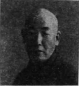
頭《あたま》も顏も筋骨稜々としゐる。頭《あたま》は頂部がことに尖つて長《なが》く、顏《かほ》も頤に力があつて長《なが》い。頭の尖《とが》つてゐるのは自尊性《じそんせい》と強硬性とが著しいことを見《み》せてゐる。側腦部では破壞性《はくわいせい》と抵抗性の發達が能《よ》く目立《めだ》つてゐる。また前額部《ぜんがくぶ》も上下に廣くて測りしれない智力《ちりよく》と頓智、滑稽な諧謔的な性格を餘分に包藏《はうざう》してゐる。これは積極質即ち筋骨質的《きんこつしつてき》な心｜性質《せいしつ》となるのである。強硬であつて勇敢《ゆうかん》、信じたことは斷じて敢行《かんかう》するという氣風が顏にみちてゐる、常に他の言《げん》を容《い》れずに、我流をやり通す傾《かたむ》きが實に多い。亂世《らんせい》とか創業とかいふときに有用《いうよう》な人物であつて、所信をば矢でも鐵砲《てつぱう》でも壓して斷行する才幹《さいかん》をもつてゐる。耳形は開花耳《かいくわみゝ》といつて骨肉子孫に縁が薄《うす》い、そしてこれらに終りを全うしにくい消息《せうそく》をもらしてゐる。口は氣宇廣大、目的思想《もくてきしさう》の遠大であることを表象《へうしやう》してゐる。然し口角は下に少《すこ》し下《さが》つてゐるし、口唇《こうしん》は上に張つて如何にも愛嬌《あいけう》を缺いてゐる。これはデストラクチブの表象《へうしやう》で言語に愛嬌を缺いて寧ろ破壞的《はくわいてき》な言葉を連發することになるから、社會《しやくわい》と調和し、人と握手して圓轉滑脱する如才《じよさい》に缺けてゐる。こんな點で當世《たうせい》に志を得ない運命を招《まね》くではなからうか。
髮際から鼻にかけて頤《あご》に至るまでの中線が如何にも堅牢であるドンナことに出會つても、沈着冷靜で決《けつ》して閉口《へいこう》しない、自分の意思を敢行《かんかう》する勢を見せてゐる。こゝらが氏の自信力《じしんりよく》が強くて信じたことは何事も頑固《ぐわんこ》に維持して遂行する所以《ゆえん》であらう。眉毛《まゆげ》は粗ではあるが優麗で毛なみもよし尻《しり》が少し下つて、宗教心や、文雅、風月《ふうげつ》の才幹に長じた性格を著明《ちよめい》に現はしてゐる恰《あたか》も西行や、宗祇を思はせるの感《かん》がある。だから本來ならば氏をば身を風雲によせて生涯風雅《しやうがいふうが》を旨とし、由のや龍田《たつた》の花、紅葉に嘯き、更科越路《さらしなこしぢ》の月雲に吟じて晩年《ばんねん》は漫畫や詩歌に樂しませることに進《すゝ》めたい。余は嘗て居士の漫畫《まんぐわ》を見たことがある、眞に脱俗《だつぞく》したもので、恰も仙崖和尚《せんがいおしやう》みたやうな風である。歌俳句《うたはいく》に至つてはこれまた非凡《ひぼん》である。即席百歌を咏《えい》ずる、昔時和歌山の祇園南海が即席百詩を吟じて新井白石《あらゐはくせき》を驚かした話しがあるが、居士《こじ》も一時間に百歌を咏《えい》ずるのである。これは居士《こじ》の美麗性、諧謔性から流露《るろ》するのである。要するに性格《せいかく》をそのまゝに押して行くと、正義剛直《せいぎがうちよく》、猛進不退、嚴正苛察《げんせいかさつ》にすぎて、世と人と仁和を缺き九仞《きうじん》の功も一箕《いつき》に缺《か》くの恐れがある。居士《こじ》は幸にして六十歳代に榮花結實《えいくわけつじつ》の宿命を以ているから、老ひて益〻《ます／＼》盛なりで目的志望に精進努力されて、宿令《しゆくれい》より以上の美果を收《をさ》められたいものである。
##◇編輯だより◇
◇著者石龍子氏は、觀相家として其の權威を知られてゐる人、醫學を修めて歐米の觀相學を醫學的立場より科學として研究し、所謂俗間の易占的觀相學と異つた科學的の観相學者として獨自の立場に立つてゐる。嘗ては一九一三年一四年には英京倫敦に於て、ゼー・ハイテング・スピリツト・オブ・ヂヤパンを發刊し其の名聲は海外諸國にまで知られ、近時世界の話題となつたシンプソン夫人の觀相を發表して歐米をアツと言はせ、世界の大新聞は氏の觀相記事の掲載權の獲得に猛烈なる競爭を演じた程であつた。
［＃本文終わり］
底本：http://dl.ndl.go.jp/info:ndljp/pid/1095165
［＃１字下げ］石龍子（1937）『觀相人物評論』今日の問題社.
入力：A-9
このテキストは、フロンティア学院図書館（https://arkfinn.github.io/frontier-library/）で作成されました。